01
EXPLORACIÓN
Recorre instalaciones, cuevas y lugares aislados mientras buscas pistas para avanzar.
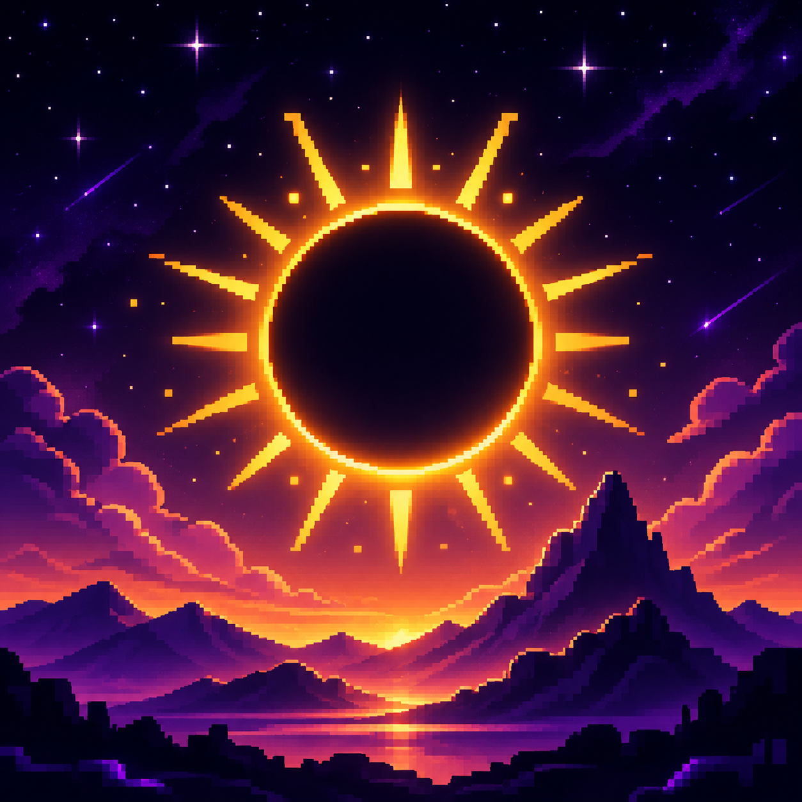
TN TIERRA DE NADIE CAPÍTULO IUNA AVENTURA DE ACCIÓN 2D
Hay lugares de los que nadie habla.
Y secretos que nunca debieron salir a la luz.
 LA ORDEN DEL SOL NEGRO
LA ORDEN DEL SOL NEGRO
Mateo tiene 19 años y una vida que está a punto de cambiar para siempre.
Tras ser secuestrado por una organización clandestina conocida como La Orden del Sol Negro, despierta en una instalación oculta entre las montañas.
Su única opción es escapar, descubrir por qué lo buscan y encontrar la conexión entre la organización y su abuelo Gabriel Ortega.
Cada documento encontrado y cada enfrentamiento lo acercarán a una verdad mucho más grande de lo que imaginaba.
EXPLORAR EL MUNDO →Algunas verdades permanecen ocultas por una razón.
Recorre instalaciones, cuevas y lugares aislados mientras buscas pistas para avanzar.
Enfrenta distintos tipos de enemigos y utiliza tus armas para sobrevivir.
Encuentra munición y objetos de curación. Cada recurso puede marcar la diferencia.
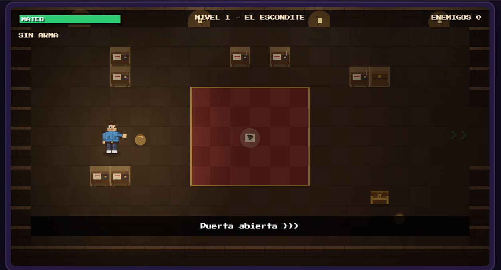
El primer paso para recuperar la libertad.
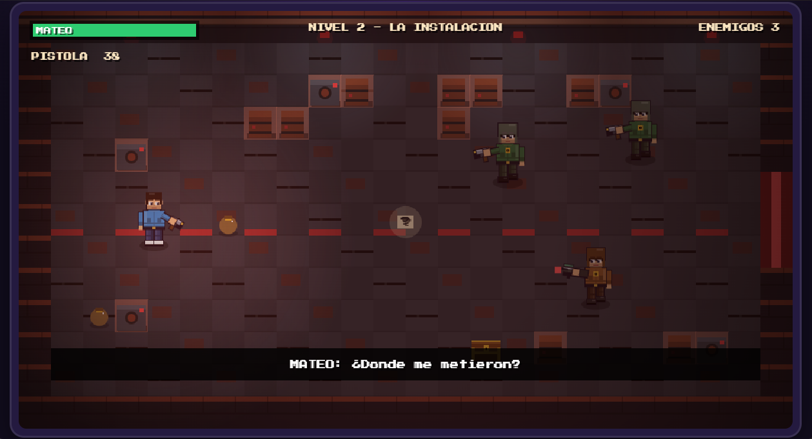
Un lugar donde nada parece ser lo que aparenta.
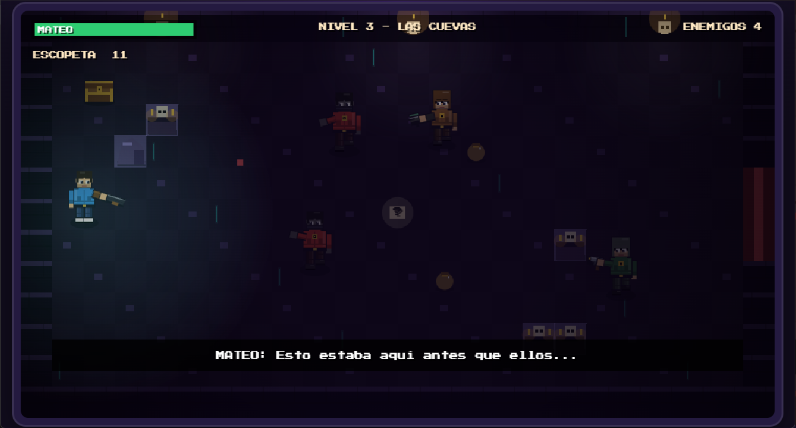
La oscuridad esconde más que caminos.
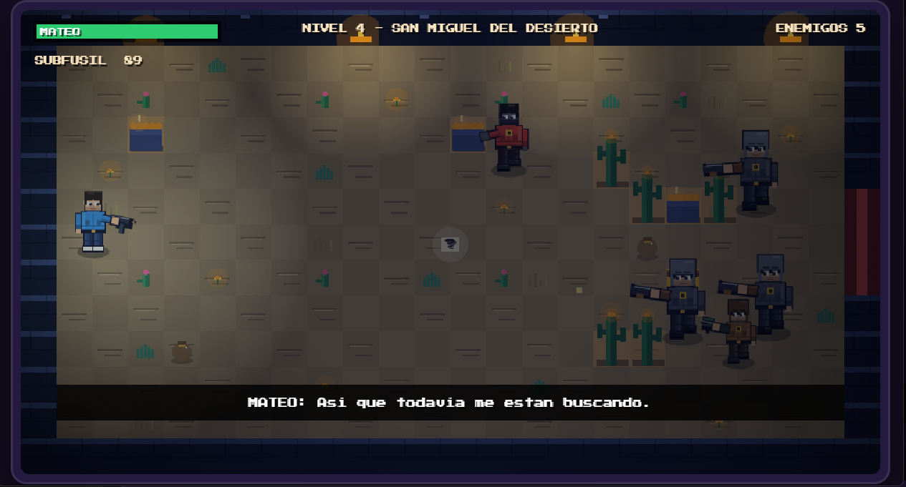
Las huellas de la Orden llegan más lejos de lo esperado.
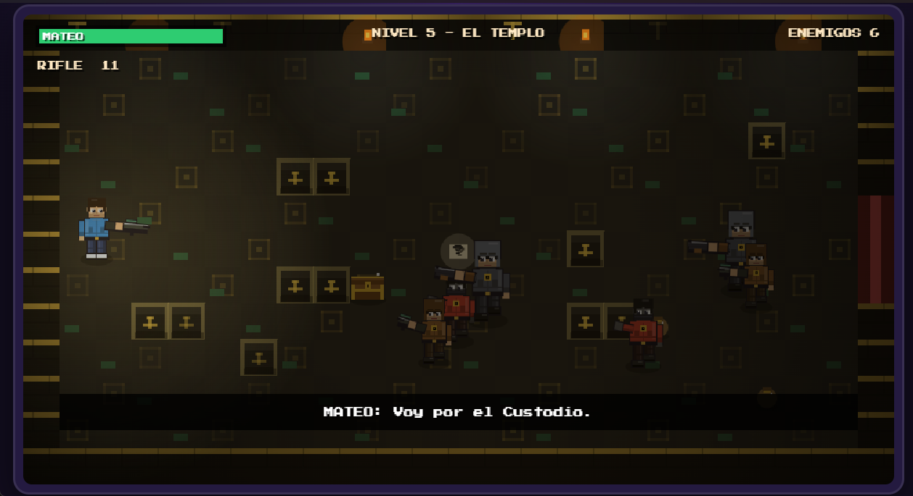
El camino conduce al centro del secreto.
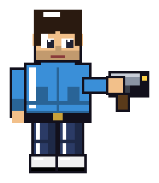
Un joven que deberá encontrar la manera de escapar y descubrir por qué la Orden lo está buscando.
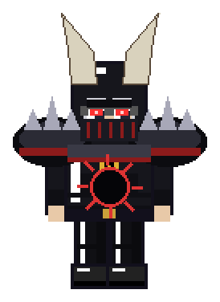
Una de las figuras de mayor autoridad dentro de la organización.
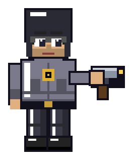
Miembros encargados de vigilar las instalaciones y detener a cualquier intruso.

Personal de seguridad que protege los sectores de la organización.

Diferentes miembros de la Orden aparecen durante el recorrido.

Una amenaza más que Mateo deberá superar para continuar avanzando.

Los miembros de la organización no permitirán que Mateo escape fácilmente.
La supervivencia dependerá de cómo utilices las armas y los recursos que encuentres durante el camino.
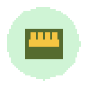
ADMINISTRA TU MUNICIÓN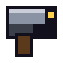

Un recurso para recuperar salud.
Objetos útiles para continuar la aventura.
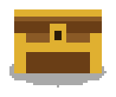
Busca objetos y recursos ocultos.
Encuentra información sobre la organización.
Algunos accesos necesitan ser desbloqueados.
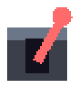
Interactúa con mecanismos del entorno.
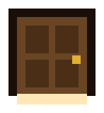
Explora nuevas zonas y encuentra accesos.
Prepárate para descubrir lo que se oculta detrás de La Orden del Sol Negro.
DESCARGA PRÓXIMAMENTE ↗ Versión para Windows · Enlace de descarga pendiente